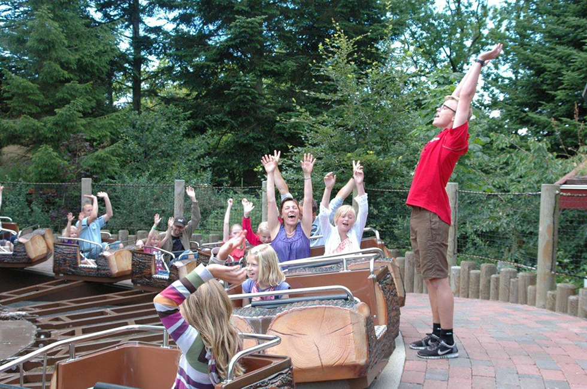

FP10 Dansk, skriftlig prøve
Prøvedel b
Modtagerrettet kommunikation
Jobansøgning
Prøvedel c
Skriftlig fremstilling
1 Uenige sammen
2 Madens Folkemøde
3 Robotter og fremtidens job
Du skal skrive den valgte opgaves nummer og titel på din besvarelse.
Modtagerrettet kommunikation
Jobansøgning
Prøvedel c
Skriftlig fremstilling
1 Uenige sammen
2 Madens Folkemøde
3 Robotter og fremtidens job
Du skal skrive den valgte opgaves nummer og titel på din besvarelse.
Før du skriver
Til eleven
Til denne prøve i skriftlig dansk har du adgang til internettet.
Du må ikke kommunikere eller dele dine dokumenter med andre under prøven.
Nogle af opgaverne kræver, at du skal søge informationer på internettet til brug for din besvarelse. I andre opgaver er det en åben mulighed at søge fakta og inspiration.
Layoutet af din besvarelse indgår i vurderingen. Tænk derfor på, at du ud over tekst kan inddrage fx billeder og andre grafiske virkemidler.
Hvis du i din besvarelse anvender informationer, citater, billeder eller andre grafiske virkemidler hentet fra internettet, skal du til sidst i besvarelsen angive de væsentlige kilder.
Din besvarelse vurderes på både indhold, sprog og form. Se vurderingskriterierne nedenfor.
God arbejdslyst!
Vurderingskriterier til eleven
Din skriftlige besvarelse bliver vurderet ud fra en helhedsvurdering af tre dimensioner: indhold, sprog og form.
Der gives én karakter.
Del b Modtagerrettet kommunikation
| Vurderingens tre dimensioner | Vurderingskriterier | Forklaring |
| Tekstens indhold | Opgavens krav | I hvor høj grad opfylder din besvarelse de krav, der er stillet i opgaven? |
| Anvendelse af den modtagerrettede kommunikation | I hvor høj grad viser din besvarelse sikkerhed i at skrive til en bestemt modtager? | |
| Disponering | I hvor høj grad har du disponeret din besvarelse, så den passer til opgavekrav og modtager? | |
| Søgning og brug af internettet | Hvis der i opgaven er stillet krav om anvendelse af internettet, eller hvis det ellers er relevant, vurderes det, hvordan og i hvor i høj grad du kritisk har bearbejdet og anvendt dette i din besvarelse. | |
| Kildeangivelse | Hvis du har anvendt internettet i din besvarelse, vurderes det, i hvor høj grad de væsentligste kilder fremgår korrekt i besvarelsen. | |
| Tekstens sprog | Sprog | I hvor høj grad er sproget i din besvarelse sikkert, varieret og tilpasset en bestemt modtager – både i ordforråd og syntaks?
I hvor høj grad er stavning og tegnsætning korrekt? |
| Tekstens form | Layout | I hvor høj grad er layoutet med til at fremme kommunikationen til en bestemt modtager i din besvarelse? |
Del c Skriftlig fremstilling
Der gives én karakter baseret på en helhedsvurdering af 3 dimensioner: indhold, sprog og form
| Vurderingens 3 dimensioner | Vurderingskriterier | Forklaring |
| Tekstens indhold | Opgavens krav | I hvor høj grad opfylder din besvarelse de krav, der er stillet i opgaven? |
| Genre og fremstillingsform | I hvor høj grad viser din besvarelse sikkerhed i at skrive i opgavekravens fremstillingsformer og i at anvende eventuelle genrekarakteristika? | |
| Disponering | I hvor høj grad er din besvarelse hensigtsmæssigt disponeret, hvad angår indholdets sammenhæng og rækkefølge? | |
| Relevans | I hvor høj grad er din besvarelse relevant og dækkende i forhold til tekstens hensigt, målgruppe og situation? | |
| Anvendelse af internettet | Hvis du har anvendt internettet til at søge inspiration eller information, vurderes det, hvordan og i hvor høj grad du kritisk har bearbejdet, anvendt og gjort det søgte til dit eget i din besvarelse | |
| Kildeliste | Hvis du har anvendt internettet, vurderes det, i hvor høj grad de væsentligste kilder er angivet korrekt i besvarelsen. | |
| Tekstens sprog | Sprog | I hvor høj grad er sproget i din besvarelse forståeligt, klart og varieret og tilpasset tekstens hensigt både med hensyn til ordforråd og syntaks? |
| Korrektur | I hvor høj grad er der i din besvarelse anvendt korrekt stavning, og er din tegnsætning sikker? | |
| Tekstens form | Layout | I hvor høj grad fremmer dit layout kommunikationen i forhold til det medie og den genre, du skriver i? |
b Modtagerrettet kommunikation
Jobansøgning

Foto: faarupsommerland.dk
Du skal være hjemme hele sommerferien og beslutter dig for at udnytte tiden til at tjene lidt penge, samtidig med at du får nogle nye venner. Derfor beslutter du dig for at skrive en uopfordret jobansøgning som ungarbejder i en forlystelsespark.
|
Skriv en uopfordret jobansøgning.
Som forberedelse til din ansøgning skal du søge informationer om de jobområder, der er i den forlystelsespark, som du vælger. I din jobansøgning skal du:
Din ansøgning skal være på 250-350 ord. Angiv antal ord. |
c Skriftlig fremstilling
Du skal vælge en af disse opgaver:
2 Madens Folkemøde 3 Robotter og fremtidens job |
1 Uenige sammen
Uenige sammen
Kilde: dr.dk
De fleste af os er sammen med mennesker, der ligner os selv. I skolen, til sport, på jobbet eller der, hvor vi bor, bliver vi sjældent udfordret på vores holdninger, fordi dem, vi er sammen med, for det meste mener det samme som os selv.
Din kommunes ungdomsråd vil gerne udgive en samling tekster, hvor unge deler deres oplevelser, tanker og overvejelser om det at rumme uenighed. Du vælger at skrive og indsende et essay til samlingen.
|
Skriv et essay.
Som forberedelse skal du se videoen, hvor uenighed hyldes på forskellig vis. Brug udtalelserne som inspiration til din egen tekst. I dit essay skal du:
|
2 Madens Folkemøde
Madens Folkemøde
Kilde: Meyers Mad, facebook.dk
Foreningen Madens Folkemøde mener, at samtalen om maden er vigtigere end nogensinde af både kulturelle, økonomiske og klimamæssige grunde.
Du er i praktik som PR-medarbejder hos foreningen og skal skrive et indlæg på foreningens nye hjemmeside til unge. Din tekst har til formål at gøre positivt opmærksom på arrangementet, så flere unge deltager i Madens Folkemøde fremover.
| Skriv en kampagnetekst om Madens Folkemøde til foreningens nye hjemmeside for unge.
Som forberedelse til din tekst skal du se ovenstående film fra arrangementet i 2019 og søge yderligere oplysninger om arrangementet. I din tekst skal du:
|
3 Robotter og fremtidens job
Foto: altomteknik.dk
Vil jobfunktioner forsvinde i fremtiden, tager robotterne over, eller bliver det hele meget nemmere og sjovere? Disse problemstillinger har du undersøgt i forbindelse med din OSO-opgave.
Du skal holde et oplæg om robotteknologi og fremtidens job for din klasse.
Klik og læs nedenstående uddrag fra artiklen Robotter kan tage flere end hver tredje danskers job: Er dit i fare?
| Skriv teksten til dit oplæg.
Som forberedelse skal du læse uddraget fra artiklen og søge yderligere oplysninger om emnet. I din tekst skal du:
|